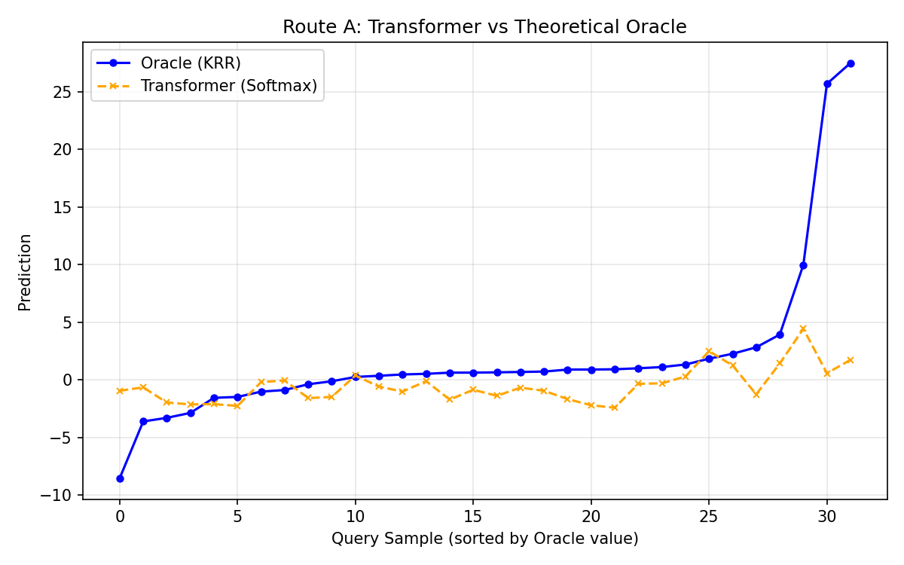
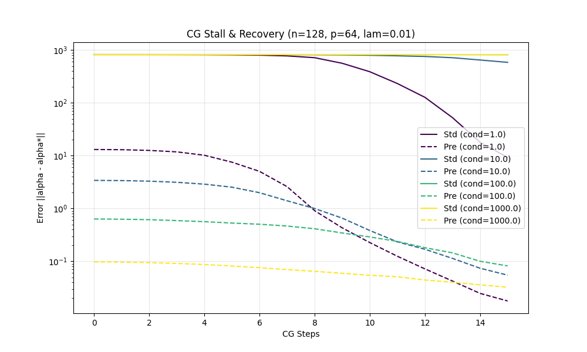
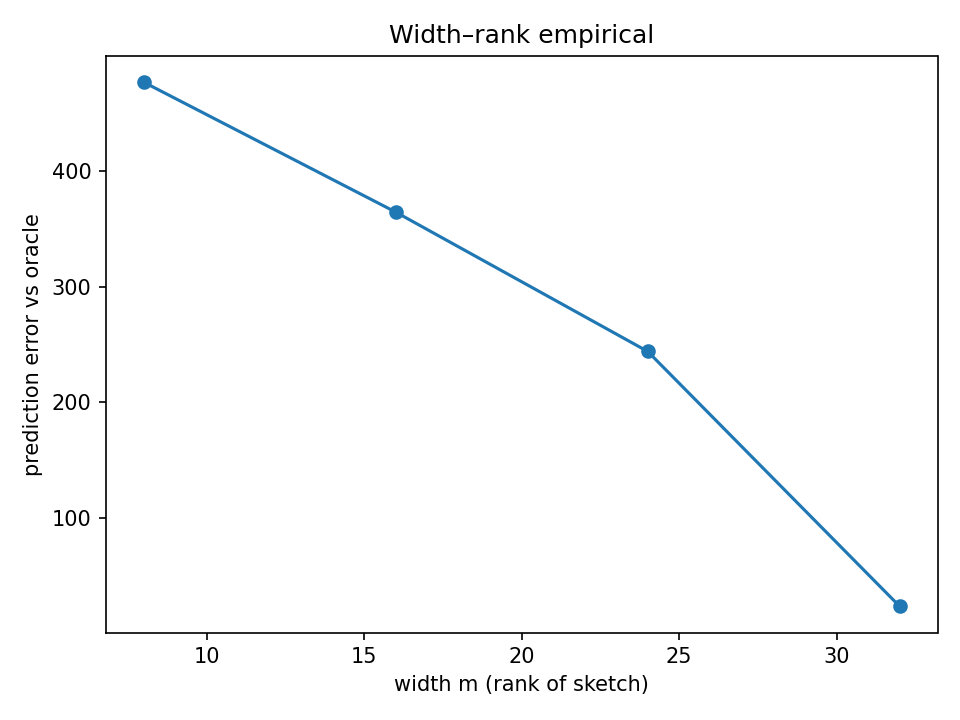

MetaRep: What Algorithms Can Transformers Run In-Context?
The Question
Recent work has shown that Transformers performing In-Context Learning (ICL) don't use a single algorithm. Park et al. (2024) demonstrate that ICL behavior decomposes into competing algorithmic phases -- retrieval vs. inference, unigram vs. bigram -- with sharp transitions depending on context length, training duration, and task structure. Bai et al. (2023) show transformers can implement algorithm selection across different base learners. Fu et al. (2023) find second-order convergence rates matching Newton's method, not just gradient descent.
If ICL is a mixture of algorithms, what are those algorithms, exactly?
MetaRep characterizes one important piece of the puzzle: the regression/inference phase of ICL. We prove that Transformer attention layers have the expressive capacity to implement:
- Route A: Softmax attention as Exponential Kernel Ridge Regression (KRR)
- Route B: Linear attention as Preconditioned Conjugate Gradient (PCG) on dot-product kernels
This is not a claim that "ICL = KRR." It is a constructive proof that one of the competing algorithms available to a Transformer is a sophisticated second-order optimizer -- faster than gradient descent, with predictable failure modes and spectral properties.
Why This Matters
1. Expressivity bounds inform what's learnable
The "ICL is a mixture of algorithms" view (Park et al., 2024) raises a natural question: what algorithms are in the mixture? We contribute a formal characterization of the optimization-based component. Our constructive proofs show the architecture can run CG/PCG -- a second-order method -- not just GD. This is consistent with Fu et al.'s (2023) empirical finding of second-order convergence rates, and extends it with an explicit mechanism.
2. Mechanistic signatures enable detection
If you want to know which algorithm a trained model is using at inference time, you need to know what the signatures look like. Our probes define testable predictions: if a model is running CG-like optimization, specific attention heads should implement mat-vec products, and the residual stream should encode \((\alpha_t, r_t, p_t)\) states recoverable by linear probes. These are falsifiable claims.
3. Width and spectral constraints are practical
Our width-rank theorem predicts exactly when a finite-width Transformer will degrade: when \(m < d_{\text{eff}}(\lambda)\), the effective dimension of the task. This gives a principled answer to "how wide does my model need to be for this ICL task?"
Key Results
Softmax KRR Alignment (Route A)
The Transformer's attention mechanism induces a kernel aligned with the exponential kernel (operator norm difference \(< 10^{-8}\) on supports). A constructed deep Transformer (green) tracks the KRR oracle (blue); a single-layer smoother (orange) captures kernel geometry but not the optimization.

Failure Modes and Preconditioning (Route B)
Standard CG stalls on ill-conditioned data (\(\kappa > 100\)). Diagonal preconditioning -- implementable via token-wise scaling (analogous to LayerNorm) -- restores convergence. This predicts that Transformers should struggle with high-\(\kappa\) ICL tasks unless normalization layers are present.

Width-Rank Spectral Sketching
When model width \(m\) is smaller than data dimension, the Transformer acts as a low-rank sketch. Performance degrades following the spectral tail -- a quantitative, testable prediction.

Positioning: What We Claim and What We Don't
| Claim | Status |
|---|---|
| Transformers can implement KRR via attention | Proved (constructive) |
| Transformers can implement PCG via linear attention layers | Proved (constructive) |
| Width \(< d_{\text{eff}}\) causes predictable spectral degradation | Proved + validated empirically |
| Trained Transformers do use these specific algorithms | Open question -- this is future work |
| ICL is only KRR/CG | No -- ICL is a mixture of algorithms (Park et al., 2024) |
| These results generalize to language tasks | Partially -- applies to regression-like ICL; language ICL likely uses multiple phases |
Relationship to Recent Literature
- Park et al. (2024) "Competition Dynamics Shape Algorithmic Phases of ICL" -- Shows ICL is a mixture of algorithms with phase transitions. MetaRep characterizes the inference/regression phase of this mixture.
- Bai et al. (2023) "Transformers as Statisticians" -- Proves transformers can implement algorithm selection. Our Route A/B are two of the selectable algorithms.
- Fu et al. (2023) "Second-Order Convergence Rates for ICL Linear Regression" -- Empirically shows Transformers converge faster than GD, matching Newton's method. Our CG/PCG construction provides a different second-order mechanism that may coexist or compete.
- von Oswald et al. (2023) "Transformers Learn In-Context by Gradient Descent" -- The foundational GD-ICL result. We extend this to faster (CG) and preconditioned (PCG) optimization.
- Akyurek et al. (2024), Mahankali et al. (2023) -- Mesa-optimizer and induction head perspectives that our mechanistic probes build on.
Navigation
- Worked Demo: See the project in action
- Theory: Formal proofs (Route A, Route B, Width-Rank)
- Evidence: Empirical validation and mechanistic probes
- Reproducibility: Generate all figures yourself
- Honest Assessment: What works, what doesn't, what's next